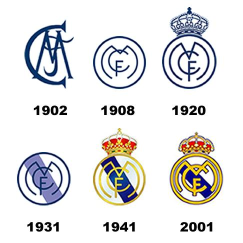
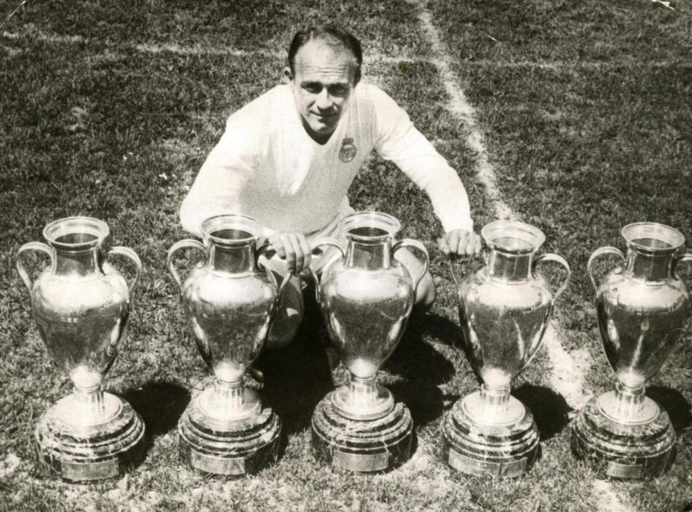
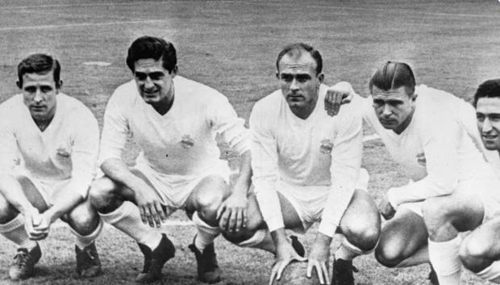
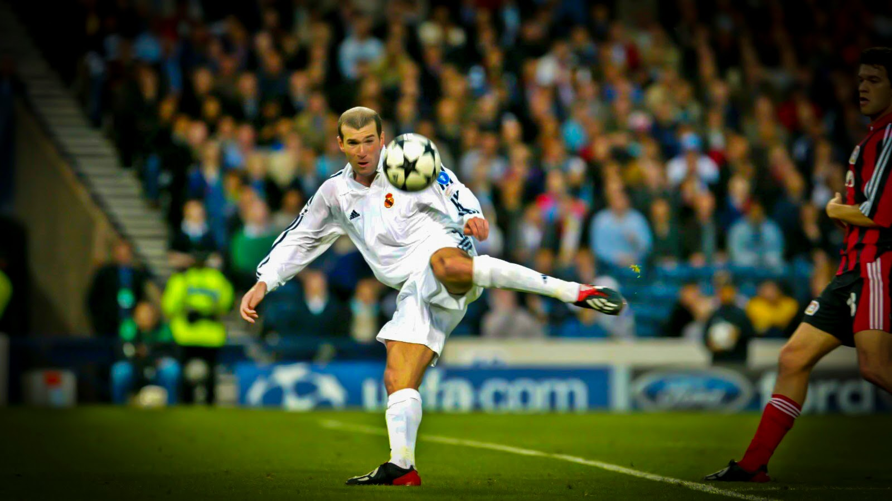
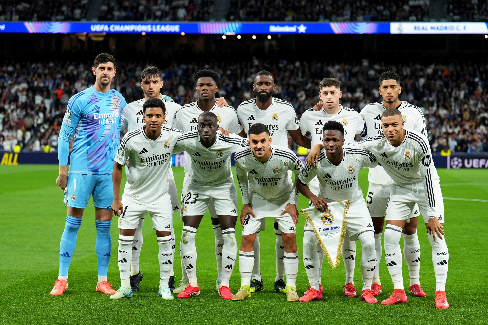
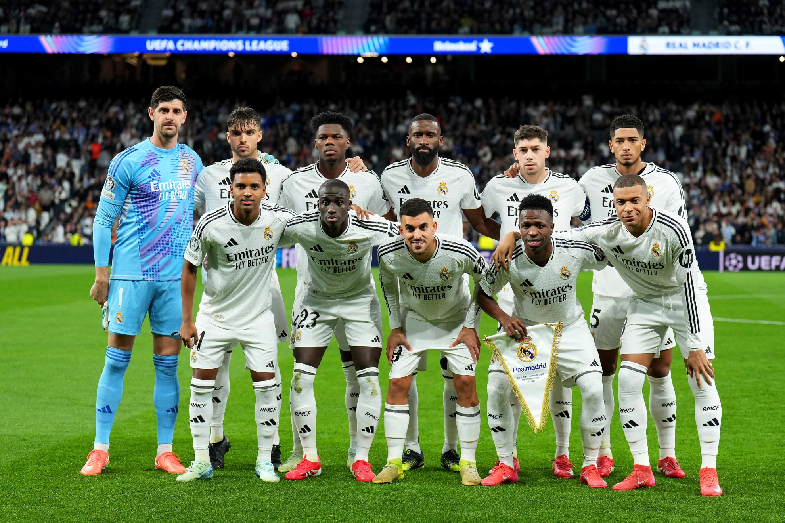

1. Fundación (1902):
El Real Madrid fue fundado el 6 de marzo de 1902 como "Madrid Football Club". Poco después, en 1920, recibió el título de "Real" por el rey Alfonso XIII.

2. Primera época de éxito (años 50):
Con la llegada de Alfredo Di Stéfano y otros grandes jugadores, el club ganó cinco Copas de Europa consecutivas (1956-1960), marcando una época dorada.

3. Éxitos nacionales e internacionales (1960-1990):
El Real Madrid ganó numerosos títulos de liga española y copas europeas, consolidándose como uno de los mejores clubes del mundo.

4. Era de los Galácticos (principios de 2000):
Con fichajes de estrellas como Zidane, Figo, Ronaldo y Beckham, el club destacó por su talento y espectáculo, ganando también la Champions League en 2002.

5. Real Madrid actual (2010 en adelante):
Con Cristiano Ronaldo y otros grandes, el equipo logró varios títulos de Champions League y ligas. Es uno de los clubes con más seguidores en el mundo.
6. El Real Madrid ha tenido una gran temporada, ganando LaLiga 2024-25 y clasificándose a la final de la Champions League 2025 (a jugarse el 1 de junio).


 
